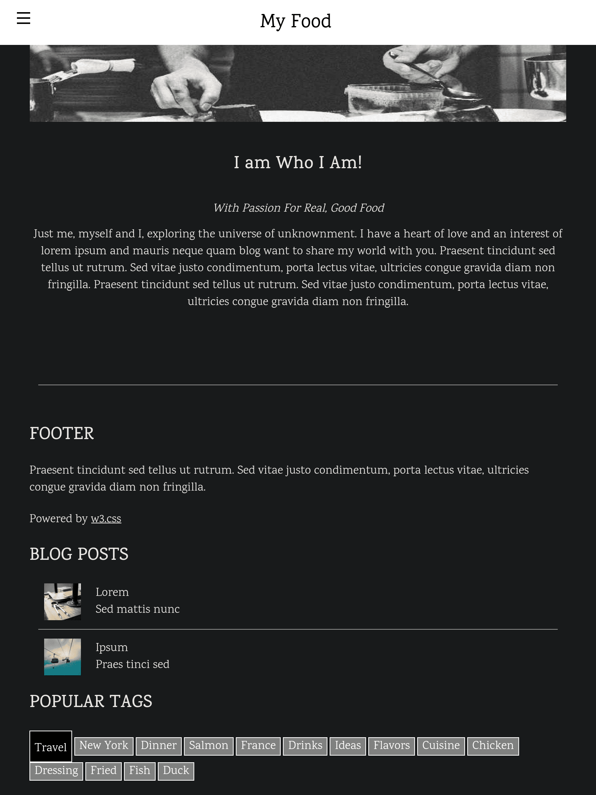
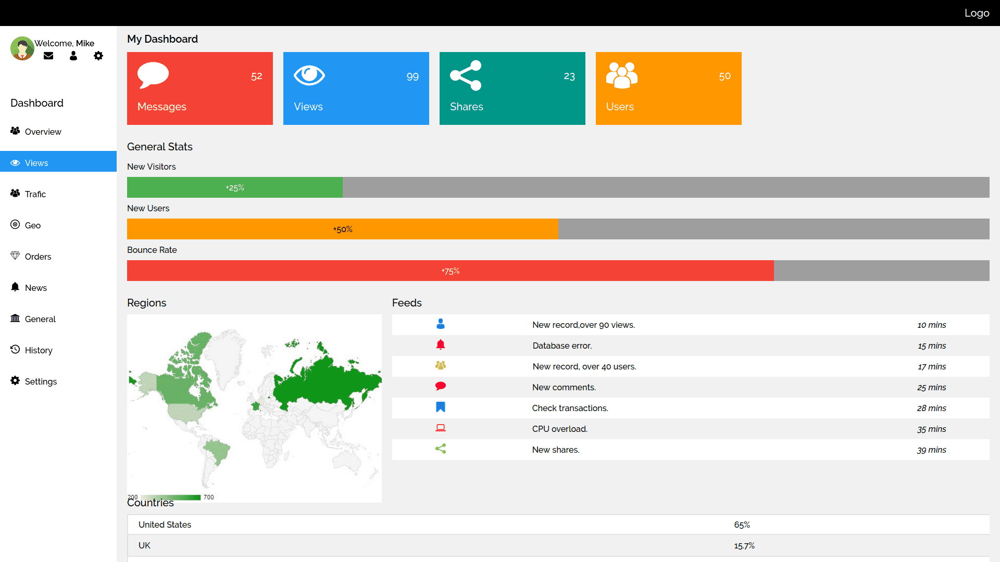

My Food
C’est mon premier projet

A propos
Il s'agit d'un site avec une résolution mobile. Le footer reste en haut de la page lors de la navigation. En
bas de la page, il y a des tags. Lorsqu'on clique dessus, son fond devient noir et sa taille grossit. Je
l'ai fait avec du JavaScript.
Compétences techniques
Analytics
Une mise en pratique complète de mes connaissances en HTML, CSS et JavaScript.

A propos
Analytics est un site que j'ai créé avec une version mobile puis desktop. Les barres de statistiques
générales se remplissent progressivement grâce à une animation. Sur mobile, le menu de navigation à gauche
disparaît et laisse place à un logo « burger ».
Compétences techniques